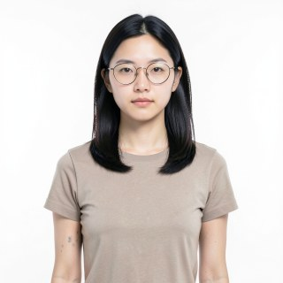
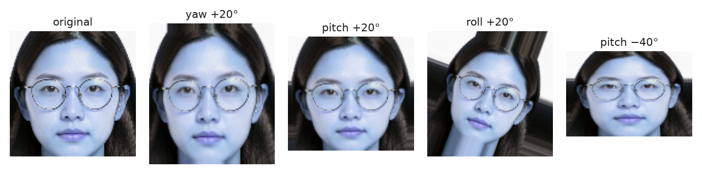
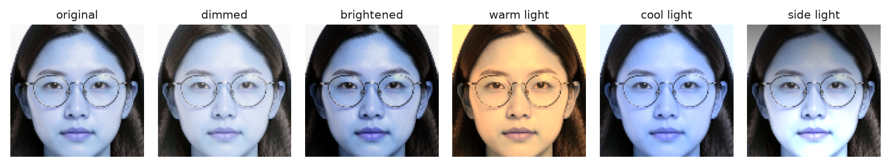
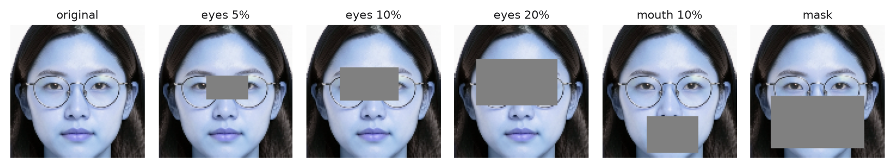
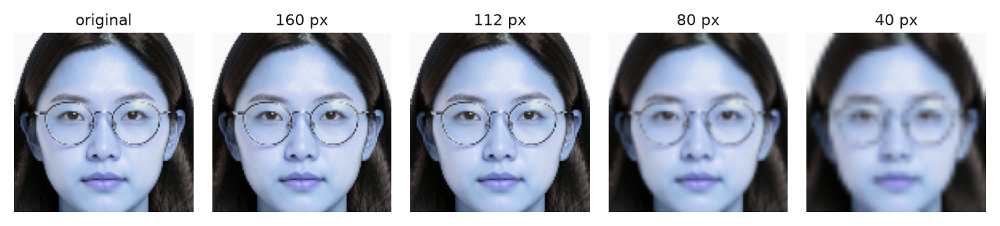
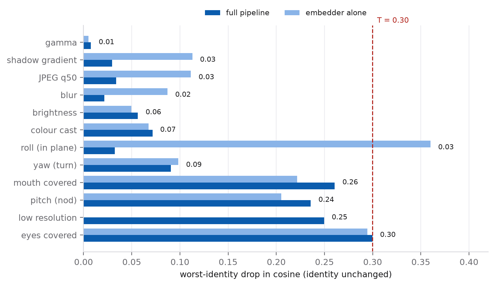
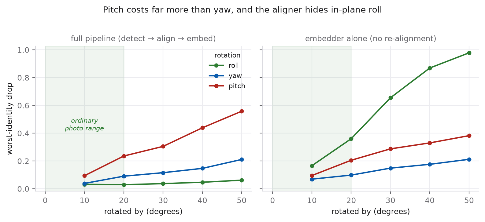
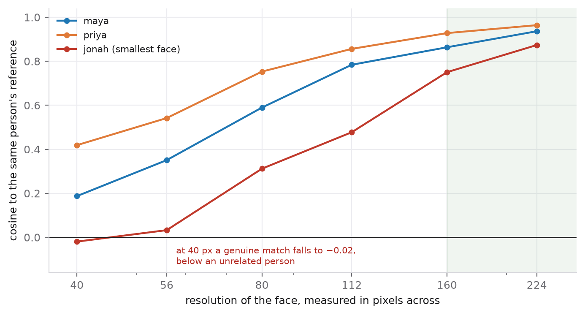
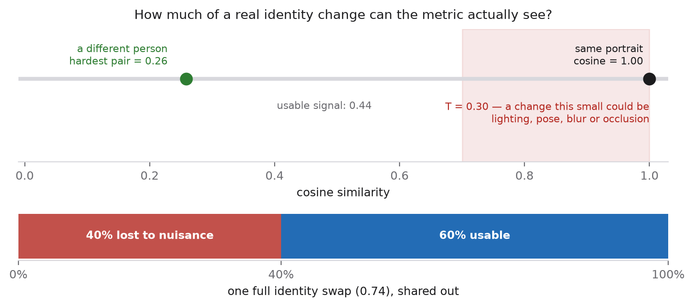
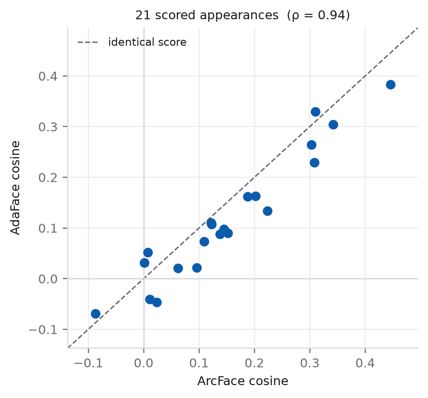

How reliable is the face-similarity score?
An analysis of the AI Camera Roll face-consistency metric. Static page —
no server, no code, no network. Numbers come from the committed result files in
evaluation/results_invariance/ and evaluation/results_adaface/.
The project measures whether a generated photo still shows the same fictional person by comparing face embeddings and reporting a cosine similarity. Those numbers were being read as if they were exact. They are not. This page quantifies how much the score moves when the identity is provably unchanged — and then asks whether the claimed effects in the project are larger than that movement.
The short version
- 0.30
- how far the score drifts from lighting, pose, blur and occlusion alone — with identity untouched
- 0.74
- how far the score moves when the person is genuinely swapped for someone else
- 40%
- of the available signal is therefore noise: nuisance eats it before any real change is measured
- 0.05 – 0.30
- the reported pass-to-pass drops — every one inside the noise, and the largest clears it by 0.0006
- No conclusion changed
- swapping in a quality-aware face model (AdaFace): scores shifted slightly and three pairings moved, but nothing flipped
1. Why a raw similarity score needs a baseline
The pipeline takes a canonical portrait of each character, finds faces in a generated photo, and compares them with a face-recognition model (ArcFace). The output is a cosine similarity between two 512-dimensional vectors: 1.0 means "the model considers these the same face", values near 0 mean "unrelated".

A score of 0.31 sounds informative. But informative relative to what? A face recognition model is a measuring instrument, and nobody had characterised this instrument's precision. Without that, "the score fell from 0.31 to 0.15" could mean the identity degraded, or simply that the second image was turned, dimmer, or softer. The two explanations are indistinguishable from the number alone.
So the first experiment does not touch the generator at all. It takes the three canonical portraits, deliberately degrades copies of them in ways that cannot change who the person is — rotate, relight, blur, shrink, cover part of the face — and measures how far the score falls. Every point of that fall is pure measurement error.
2. What was varied, and what counts as "realistic"
Each portrait is pushed through two paths in parallel, because they answer different questions:
| Path | What it includes | Why |
|---|---|---|
| Full pipeline | detect the face again, re-align it, then embed | this is what the project actually does, so it is the number that applies |
| Embedder alone | perturb the cropped face, then embed | separates the model's sensitivity from the alignment step's |
Only "realistic" degradations — the kind that still leave a human able to name the person — are allowed to define the noise floor. The frozen rule: rotation within ±20°, gamma 0.7–1.4, brightness 0.8–1.25×, three colour temperatures, at least 160 px across the face, mild blur, JPEG quality ≥ 50, and occlusion covering at most 10 % of the face box. Harsher levels are measured and reported, but they do not set the floor — otherwise the noise estimate inflates until no real change could ever be detected.
The degradations, on the face the model actually sees




Example images are rendered from the saved aligned 112 × 112 crop of Maya's canonical portrait by the same perturbation code that produced the measurements, so they show exactly what the face recogniser was fed. Tiles are shown at native size; pose tiles differ slightly in shape because a perspective warp changes the frame. Contact sheets for every level and all three characters are regenerated by evaluation/face_invariance.py.
3. What the instrument actually does

| Degradation | Family | Worst drop | Typical drop |
|---|---|---|---|
| gamma | illumination | 0.01 | 0.01 |
| shading | illumination | 0.03 | 0.02 |
| gain offset | illumination | 0.06 | 0.03 |
| jpeg | resolution | 0.03 | 0.02 |
| blur | resolution | 0.02 | 0.02 |
| temperature | illumination | 0.07 | 0.05 |
| roll | pose | 0.03 | 0.02 |
| yaw | pose | 0.09 | 0.07 |
| mouth | occlusion | 0.26 | 0.22 |
| downscale | resolution | 0.25 | 0.15 |
| pitch | pose | 0.24 | 0.17 |
| eyes | occlusion | 0.30 | 0.24 |
Three findings matter, and two of them are counter-intuitive:
- Lighting is essentially free. Every brightness and colour change inside the realistic range costs at most 0.07. Any effort spent on illumination normalisation would be wasted — the model already handles it.
- Pose is not free, and it is lopsided. Turning the head sideways (yaw) costs 0.09; nodding it up or down (pitch) costs 0.24, roughly two and a half times as much. Tilting within the picture plane looks almost free in the full pipeline (0.03) because the alignment step undoes it — but take that step away and the same tilt costs 0.36, more than ten times as much. That gap is the alignment doing real work.
- Covering the eyes and losing resolution are the worst cases — 0.30 and 0.25 — and neither is something the face-recognition literature would lead you to expect from a modern embedding. A small grey patch over both eyes is visually trivial to a human and expensive to the model.

Resolution: the failure is not uniform

This is the most awkward result in the analysis. A same-identity comparison cannot legitimately score below a different-person comparison, yet at extreme resolution it does. Practically it means resolution sensitivity is tied to how large a character happens to be drawn: a character who is small in frame is judged more harshly for reasons that have nothing to do with identity. Any comparison across characters is confounded by this.
4. Turning that into a single number
The noise floor T is the largest drop any one identity showed under a
realistic degradation: 0.2997. It is a bound, not an average — a
statement that no realistic nuisance in the tested grid moved any portrait further than
this while the identity stayed fixed.

Put against the size of a genuine identity change, the noise is large. The hardest impostor pair in the reference gallery (Maya and Priya) sits at 0.26, so swapping one character for another moves the score by 0.74. Nuisance alone accounts for 40% of that. In signal-to-noise terms, the ratio is 2.5.
The practical rule: a change smaller than about 0.30 means nothing. It is not evidence of improvement, and it is not evidence of regression.
5. So do the project's claimed effects survive?
The clearest claim in the project is that Maya's similarity fell after the second generation pass in all four multi-pass scenes. Checking each drop against the floor:
| Scene | Pass 1 | Pass 2 | Drop | Verdict |
|---|---|---|---|---|
| month 1 | 0.446 | 0.145 | +0.3003 | tie with T |
| month 2 | 0.308 | 0.062 | +0.2463 | inside the noise |
| month 8 | 0.342 | 0.223 | +0.1188 | inside the noise |
| month 10 | 0.109 | 0.057 | +0.0516 | inside the noise |
The direction reproduces; the size does not support the conclusion. The January scene is the only one that comes close: it clears the floor by 0.0006, which is a tie, not a separation. February (0.25), August (0.12) and October (0.05) are all inside it. In the fresh control run, October's score actually rose slightly (-0.0007), which is what noise looks like.
None of this says the generator preserves identity well. It says the evidence offered for identity loss is not strong enough to distinguish from lighting, pose and framing. Absence of evidence, not evidence of absence.
An error to avoid repeating
The first version of this analysis also flagged all 22 scene faces as "outside the envelope" by comparing each score against 1.0. That comparison is invalid and should not be quoted.
The floor was measured on a portrait versus a degraded copy of that same portrait,
whose baseline is 1.0 by construction. A generated scene face is a different rendering
entirely and was never going to score near 1.0, so an absolute gate rejects every face
regardless of identity and carries no information. T is only valid as a budget
on the difference between two conditions — which is what the table above
does.
Fixing the absolute question needs a matched baseline: compare two independently generated images of the same character. The aligned crops are already saved, so this is cheap, and it is the top item in the backlog.
6. Would a better face model fix it?
The obvious response to "the model is sensitive" is to use a better model. AdaFace (CVPR 2022) is the natural candidate: it is trained with a quality-adaptive margin specifically so that low-quality faces are handled better. The test swaps it in while holding everything else fixed — the same detections, the same aligned crops, the same references, the same pairing rule — so the model is the only variable.

| ArcFace | AdaFace | |
|---|---|---|
| Appearances assigned to someone | 22 | 22 |
| Near-ties (margin below 0.07) | 10 of 22 | 12 of 22 |
| Confident-looking but actually wrong-rank cases | 2 | 3 |
| Mean change in similarity (AdaFace − ArcFace) | -0.034 (range -0.089 to +0.045) | |
The two models agree closely — rank correlation 0.94 on assigned pairs — but AdaFace scores slightly lower on average and produces more near-ties, not fewer. Three pairings changed, all in the same October scene:
| Scene | Character | ArcFace | AdaFace |
|---|---|---|---|
| month 10, pass 2 | maya | face 0 | unassigned |
| month 10, pass 2 | priya | unassigned | face 1 |
| month 10, pass 2 | jonah | face 1 | face 0 |
And the headline claim does not flip. Maya's pass-to-pass numbers under both models:
| Scene | ArcFace | AdaFace |
|---|---|---|
| month 1 | 0.446 → 0.145 | 0.383 → 0.098 |
| month 2 | 0.308 → 0.062 | 0.230 → 0.021 |
| month 8 | 0.342 → 0.223 | 0.305 → 0.134 |
| month 10 | 0.109 → 0.057 | 0.073 → dropped |
Verdict: a lateral move, not a fix. A quality-aware model cannot rescue a metric whose noise already consumes 40 % of its signal — the bottleneck is the measurement design, not the model. The one genuinely useful outcome is a stability check: the two models agree about Maya and disagree about the supporting characters, which suggests Maya's drift is real while the others' is not. That kind of cross-model agreement is a better use of a second model than replacing the first.
7. What to do next
Ranked, with effort and rationale, in FUTURE_WORK.md. The three that follow directly from this page:
- Build a matched baseline. Compare two generated images of the same character, using the crops already saved. This replaces the invalid absolute gate and turns the score into something with a real reference point.
- Test degradations in combination. The floor above varies one thing at a time, which makes it a lower bound; real scenes combine pose, occlusion and resolution.
- Gate on quality. Report a quality estimate beside every similarity instead of averaging unwinnable comparisons into a mean, so coverage is visible.
8. Limits of what this page establishes
- Three synthetic identities. Every number here rests on three portraits.
Expression, genuine 3D rotation, ageing and true profile views are untested, which makes
Ta lower bound and every "inside the envelope" verdict permissive. - Planar pose. The rotation is a 2D warp: no self-occlusion, unchanged shading, and the detector still finds landmarks at extreme angles. Real pose sensitivity is worse.
- One degradation at a time. See above.
- A tightly packed gallery. The references sit close together in embedding space (up to 0.26 between different people), so a "correct" pairing can be a near-tie — 10 of 22 are.
- The score is not a probability. There is no calibrated identity threshold, and nothing here establishes one. This measures the sensitivity of a similarity, not human-perceived identity, and it says nothing about image quality.
- Ground truth is a prompt, not a labelled image. A missing detection is recorded as missing, never as zero.